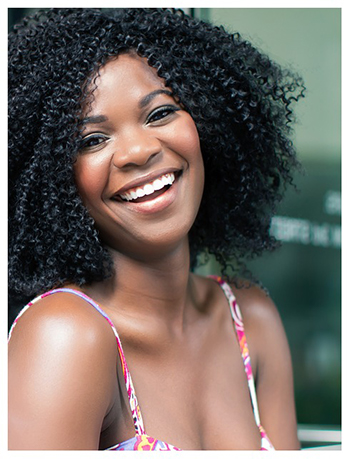

About Me
Sed nisi est, aliquam non gravida et, euismod id ex. Praesent molestie metus justo, non tristique nisl blandit id. Proin porta nisl eros, vitae laoreet eros vestibulum in. Integer faucibus malesuada purus quis consectetur.
Vivamus nec sollicitudin diam, at posuere augue. Nunc pulvinar imperdiet massa ut tincidunt. Pellentesque ac tincidunt metus, nec molestie magna.